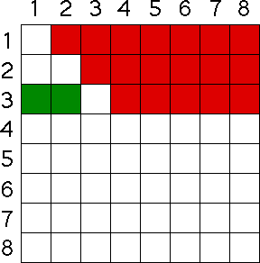

| What about animal 3? |
| Certainly, it cannot compete with itself, |
| and we have already counted the competiton between animal 1 and animal 3, |
| and between animal 2 and animal 3, both colored green in the chart. |
| So we are left with five new competitive pairs. |
|  |
| Now we see the general pattern. |
Return to the Logistic Map.